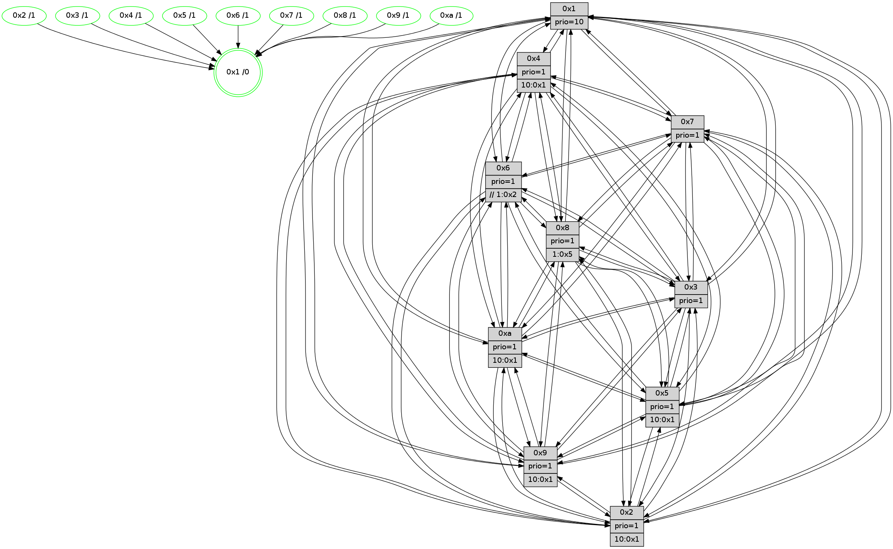

>> << IDX [start] -100 -25 -5 +0 +5 +25 [1595.60567212]
 Previous packets
----------------------------------------------------------------------
1590.088758 beacon01(faad) #0 coord=01,02,03,04,05,06,07,0a,09,08 cycle=688.0ms assoc
-- color-indic=1 64 8e 5f
1590.098741 beacon02(faad) #0 coord=01,02,03,04,05,06,07,0a,09,08 cycle=688.0ms assoc 64 1d 6e
1590.108740 beacon03(faad) #0 coord=01,02,03,04,05,06,07,0a,09,08 cycle=688.0ms assoc 64 67 23
1590.118741 beacon04(faad) #0 coord=01,02,03,04,05,06,07,0a,09,08 cycle=688.0ms assoc 64 10 c9
1590.128742 beacon05(faad) #0 coord=01,02,03,04,05,06,07,0a,09,08 cycle=688.0ms assoc 64 6a 84
1590.138741 beacon06(faad) #0 coord=01,02,03,04,05,06,07,0a,09,08 cycle=688.0ms assoc 64 e4 53
1590.148741 beacon07(faad) #0 coord=01,02,03,04,05,06,07,0a,09,08 cycle=688.0ms assoc 64 9e 1e
1590.158746 beacon0a(faad) #0 coord=01,02,03,04,05,06,07,0a,09,08 cycle=688.0ms assoc 64 ef 15
1590.178747 beacon08(faad) #0 coord=01,02,03,04,05,06,07,0a,09,08 cycle=688.0ms assoc 64 1b 8f
1590.190352 [STC(2)->1 #0.288 new-neigh,tree-change,inconsistent-stability,stable,to-color d=1]
1590.191771 [STC(3)->1 #0.288 new-neigh,tree-change,inconsistent-stability,stable,to-color d=1]
1590.193833 [STC(6)->1 #0.288 new-neigh,tree-change,inconsistent-stability,stable,to-color d=1]
1590.195506 [Color(1) seq=693 @0:0 prio=10]
1590.197608 [Hello(10): seq=946 sym=6,2,3,8,7,5,4,1 sysInfo=hasWarning stat=6:8,11,0,9/2:1,0,3,4/3:7,4,10,0/8:4,2,5,8/7:1,3,1,1/5:7,14,8,5/4:5,3,11,5/1:3,14,4,1]
1590.200016 [STC(5)->1 #0.288 new-neigh,tree-change,inconsistent-stability,stable,to-color d=1]
1590.201263 [STC(10)->1 #0.288 new-neigh,tree-change,inconsistent-stability,stable,to-color d=1]
1590.204321 [Color(5) seq=538 @0:0 prio=1 >10.@1,1.@6,1.@7,1.@8]
1590.206883 [Color(10) seq=590 @0:0 prio=1 >10.@1,1.@5,1.@6,1.@7]
1590.209140 [Hello(4): seq=1013 sym=5,8,6,2,3,9,7,10,1 sysInfo=hasWarning stat=5:7,1,0,6/8:1,5,5,1/6:13,13,11,6/2:15,0,1,5/3:3,2,9,2/9:8,13,2,6/7:0,9,7,2/10:10,7,10,1/1:7,1,3,1]
1590.212454 [Hello(9): seq=957 sym=2,5,3,4,7,6,8,10,1 sysInfo=hasWarning stat=2:0,12,3,15/5:3,11,9,2/3:15,15,1,8/4:3,3,8,5/7:6,6,2,2/6:13,11,0,5/8:6,8,10,11/10:15,5,12,1/1:15,5,6,1]
1590.215256 [Hello(7): seq=1013 sym=2,3,5,6,8,4,9,10,1 sysInfo=hasWarning stat=2:6,10,15,8/3:8,0,4,7/5:9,13,15,7/6:2,1,15,1/8:15,9,7,3/4:15,1,4,2/9:3,14,8,5/10:4,7,0,1/1:6,7,2,0]
1590.219046 [STC(7)->1 #0.288 new-neigh,tree-change,inconsistent-stability,stable,to-color d=1]
1590.221324 [Hello(8): seq=957 sym=5,2,3,7,9,6,4,10,1 sysInfo=hasWarning stat=5:2,11,10,4/2:12,6,4,0/3:11,15,8,6/7:7,15,6,1/9:3,9,11,9/6:6,15,5,4/4:13,15,15,3/10:13,10,2,7/1:9,12,7,0]
1590.225085 [STC(8)->1 #0.288 new-neigh,tree-change,inconsistent-stability,stable,to-color d=1]
1590.227919 [STC(4)->1 #0.288 new-neigh,tree-change,inconsistent-stability,stable,to-color d=1]
1590.230531 [Color(7) seq=520 @0:0 prio=1]
1590.232516 [STC(9)->1 #0.288 new-neigh,tree-change,inconsistent-stability,stable,to-color d=1]
1590.234470 [Color(9) seq=539 @0:0 prio=1 >10.@1,1.@5,1.@6,1.@7]
1590.240060 [Color(4) seq=530 @0:0 prio=1 >10.@1,1.@2,1.@3,1.@5]
----------------------------------------------------------------------
1590.876889 beacon01(faad) #0 coord=01,02,03,04,05,06,07,0a,09,08 cycle=688.0ms assoc
-- color-indic=1 64 ba 47
1590.886872 beacon02(faad) #0 coord=01,02,03,04,05,06,07,0a,09,08 cycle=688.0ms assoc 64 29 76
1590.896872 beacon03(faad) #0 coord=01,02,03,04,05,06,07,0a,09,08 cycle=688.0ms assoc 64 53 3b
1590.906873 beacon04(faad) #0 coord=01,02,03,04,05,06,07,0a,09,08 cycle=688.0ms assoc 64 24 d1
1590.916873 beacon05(faad) #0 coord=01,02,03,04,05,06,07,0a,09,08 cycle=688.0ms assoc 64 5e 9c
1590.926871 beacon06(faad) #0 coord=01,02,03,04,05,06,07,0a,09,08 cycle=688.0ms assoc 64 d0 4b
1590.936872 beacon07(faad) #0 coord=01,02,03,04,05,06,07,0a,09,08 cycle=688.0ms assoc 64 aa 06
1590.946878 beacon0a(faad) #0 coord=01,02,03,04,05,06,07,0a,09,08 cycle=688.0ms assoc 64 db 0d
1590.966877 beacon08(faad) #0 coord=01,02,03,04,05,06,07,0a,09,08 cycle=688.0ms assoc 64 2f 97
1590.978413 [Hello(5): seq=1014 sym=7,6,4,2,1,9,8,10,3 sysInfo=hasWarning stat=7:2,2,5,2/6:0,6,3,3/4:2,5,8,1/2:14,13,5,2/1:1,9,0,0/9:10,0,2,15/8:7,3,11,10/10:1,15,5,13/3:0,9,6,0]
1590.981489 [Hello(2): seq=1010 sym=4,5,7,6,3,9,8,10,1 sysInfo=hasWarning stat=4:11,12,13,1/5:7,12,0,5/7:0,5,6,4/6:9,14,2,0/3:15,4,6,0/9:5,8,10,13/8:6,12,11,1/10:4,11,11,15/1:14,12,0,0]
1590.984534 [Hello(3): seq=1014 sym=1,7,6,2,4,8,9,10,5 sysInfo=hasWarning stat=1:12,15,10,0/7:12,1,7,1/6:2,6,1,0/2:0,13,3,0/4:9,15,5,1/8:4,13,13,10/9:3,1,14,4/10:11,9,5,8/5:13,11,10,4]
1590.987175 [Color(8) seq=601 @0:0 prio=1 >1.@5,1.@6,1.@7,1.@9]
1590.990194 [Color(3) seq=643 @0:0 prio=1]
1590.995788 [Color(2) seq=574 @0:0 prio=1 >10.@1,1.@3,1.@4,1.@5]
1590.998053 [Hello(6): seq=1014 sym=3,2,5,4,7,9,8,10,1 sysInfo=hasWarning stat=3:2,3,1,1/2:13,0,8,3/5:3,9,4,8/4:6,6,13,12/7:12,6,1,2/9:10,8,2,14/8:14,8,8,12/10:1,9,12,1/1:10,0,5,1]
1591.001209 [Color(6) seq=646 @0:0 prio=1 >>1.@2,1.@3,1.@4]
1591.008115 [Hello(1): seq=923 sym=4,2,9,5,10,3,8,6,7 sysInfo=coloring-mode-on,ColoringModeRequestCalled stat=4:14,11,14,5/2:2,8,10,9/9:5,14,11,6/5:11,15,1,13/10:0,7,3,10/3:14,4,4,14/8:11,4,9,9/6:8,0,12,7/7:12,11,2,4]
----------------------------------------------------------------------
1591.665020 beacon01(faad) #0 coord=01,02,03,04,05,06,07,0a,09,08 cycle=688.0ms assoc
-- color-indic=1 64 06 42
1591.675003 beacon02(faad) #0 coord=01,02,03,04,05,06,07,0a,09,08 cycle=688.0ms assoc 64 95 73
1591.685001 beacon03(faad) #0 coord=01,02,03,04,05,06,07,0a,09,08 cycle=688.0ms assoc 64 ef 3e
1591.695003 beacon04(faad) #0 coord=01,02,03,04,05,06,07,0a,09,08 cycle=688.0ms assoc 64 98 d4
1591.705002 beacon05(faad) #0 coord=01,02,03,04,05,06,07,0a,09,08 cycle=688.0ms assoc 64 e2 99
1591.715003 beacon06(faad) #0 coord=01,02,03,04,05,06,07,0a,09,08 cycle=688.0ms assoc 64 6c 4e
1591.725003 beacon07(faad) #0 coord=01,02,03,04,05,06,07,0a,09,08 cycle=688.0ms assoc 64 16 03
1591.735007 beacon0a(faad) #0 coord=01,02,03,04,05,06,07,0a,09,08 cycle=688.0ms assoc 64 67 08
1591.755008 beacon08(faad) #0 coord=01,02,03,04,05,06,07,0a,09,08 cycle=688.0ms assoc 64 93 92
1591.766228 [Hello(8): seq=958 sym=5,2,3,7,9,6,4,10,1 sysInfo=hasWarning stat=5:3,11,10,4/2:12,7,4,0/3:11,0,8,6/7:7,0,6,1/9:3,10,12,9/6:7,0,5,4/4:13,0,0,3/10:13,10,2,7/1:10,12,7,0]
1591.770248 [Color(5) seq=539 @0:0 prio=1 >10.@1,1.@6,1.@7,1.@8]
1591.774548 [Hello(4): seq=1014 sym=5,8,6,2,3,9,7,10,1 sysInfo=hasWarning stat=5:8,1,0,6/8:1,6,5,1/6:14,14,11,6/2:0,1,2,5/3:4,3,10,2/9:8,13,2,6/7:0,9,7,2/10:10,7,10,1/1:8,1,3,1]
1591.777699 [Color(4) seq=531 @0:0 prio=1 >10.@1,1.@2,1.@3,1.@5]
1591.780354 [Hello(7): seq=1014 sym=2,3,5,6,8,4,9,10,1 sysInfo=hasWarning stat=2:7,11,0,8/3:9,1,5,7/5:10,13,15,7/6:3,2,15,1/8:15,10,7,3/4:15,2,4,2/9:3,15,9,5/10:4,7,0,1/1:7,7,2,0]
1591.783490 [Color(7) seq=521 @0:0 prio=1]
1591.785012 [Hello(10): seq=947 sym=6,2,3,8,7,5,9,4,1 sysInfo=hasWarning stat=6:9,12,0,9/2:2,1,4,4/3:8,5,11,0/8:5,3,6,8/7:2,4,2,1/5:8,14,8,5/9:0,1,1,0/4:6,4,12,5/1:4,14,4,1]
1591.788870 [Color(1) seq=694 @0:0 prio=10]
1591.790163 [Hello(9): seq=958 sym=2,5,3,4,7,6,8,10,1 sysInfo=hasWarning stat=2:1,13,4,15/5:4,11,9,2/3:0,0,2,8/4:3,4,8,5/7:6,6,2,2/6:14,12,0,5/8:6,9,10,11/10:15,5,12,1/1:0,5,6,1]
1591.793735 [Color(10) seq=591 @0:0 prio=1 >10.@1,1.@5,1.@6,1.@7]
1591.795357 [Color(9) seq=540 @0:0 prio=1 >10.@1,1.@5,1.@6,1.@7]
----------------------------------------------------------------------
1592.453150 beacon01(faad) #0 coord=01,02,03,04,05,06,07,0a,09,08 cycle=688.0ms assoc
-- color-indic=1 64 c2 4c
1592.463133 beacon02(faad) #0 coord=01,02,03,04,05,06,07,0a,09,08 cycle=688.0ms assoc 64 51 7d
1592.473132 beacon03(faad) #0 coord=01,02,03,04,05,06,07,0a,09,08 cycle=688.0ms assoc 64 2b 30
1592.483132 beacon04(faad) #0 coord=01,02,03,04,05,06,07,0a,09,08 cycle=688.0ms assoc 64 5c da
1592.493135 beacon05(faad) #0 coord=01,02,03,04,05,06,07,0a,09,08 cycle=688.0ms assoc 64 26 97
1592.503133 beacon06(faad) #0 coord=01,02,03,04,05,06,07,0a,09,08 cycle=688.0ms assoc 64 a8 40
1592.513133 beacon07(faad) #0 coord=01,02,03,04,05,06,07,0a,09,08 cycle=688.0ms assoc 64 d2 0d
1592.523139 beacon0a(faad) #0 coord=01,02,03,04,05,06,07,0a,09,08 cycle=688.0ms assoc 64 a3 06
1592.543139 beacon08(faad) #0 coord=01,02,03,04,05,06,07,0a,09,08 cycle=688.0ms assoc 64 57 9c
1592.555647 [Hello(5): seq=1015 sym=7,6,4,2,1,9,8,10,3 sysInfo=hasWarning stat=7:3,3,5,2/6:1,7,3,3/4:3,6,8,1/2:15,14,5,2/1:2,10,0,0/9:11,1,2,15/8:8,4,11,10/10:2,0,5,13/3:1,10,6,0]
1592.559009 [Hello(3): seq=1015 sym=1,7,6,2,4,8,9,10,5 sysInfo=hasWarning stat=1:13,0,10,0/7:13,2,7,1/6:3,7,1,0/2:1,14,3,0/4:10,0,5,1/8:5,13,13,10/9:4,2,14,4/10:12,10,5,8/5:14,12,10,4]
1592.562013 [Color(8) seq=602 @0:0 prio=1 >1.@5,1.@6,1.@7,1.@9]
1592.564392 [Hello(2): seq=1011 sym=4,5,7,6,3,9,8,10,1 sysInfo=hasWarning stat=4:12,13,13,1/5:8,13,0,5/7:1,6,6,4/6:10,15,2,0/3:15,4,6,0/9:6,9,10,13/8:7,12,11,1/10:5,12,11,15/1:15,13,0,0]
1592.569370 [Hello(1): seq=924 sym=4,2,9,5,10,3,8,6,7 sysInfo=coloring-mode-on,ColoringModeRequestCalled stat=4:14,11,14,5/2:2,8,10,9/9:6,15,11,6/5:11,15,1,13/10:0,8,3,10/3:14,4,4,14/8:12,4,9,9/6:8,0,12,7/7:12,11,2,4]
1592.572875 [Hello(6): seq=1015 sym=3,2,5,4,7,9,8,10,1 sysInfo=hasWarning stat=3:2,3,1,1/2:14,0,8,3/5:4,10,4,8/4:7,7,13,12/7:13,7,1,2/9:11,9,2,14/8:15,8,8,12/10:2,10,12,1/1:11,1,5,1]
1592.577092 [Color(2) seq=575 @0:0 prio=1 >10.@1,1.@3,1.@4,1.@5]
1592.581608 [Color(6) seq=647 @0:0 prio=1 >>1.@2,1.@3,1.@4]
1592.584325 [Color(3) seq=644 @0:0 prio=1]
----------------------------------------------------------------------
1593.241279 beacon01(faad) #0 coord=01,02,03,04,05,06,07,0a,09,08 cycle=688.0ms assoc
-- color-indic=1 64 7e 49
1593.251261 beacon02(faad) #0 coord=01,02,03,04,05,06,07,0a,09,08 cycle=688.0ms assoc 64 ed 78
1593.261263 beacon03(faad) #0 coord=01,02,03,04,05,06,07,0a,09,08 cycle=688.0ms assoc 64 97 35
1593.271262 beacon04(faad) #0 coord=01,02,03,04,05,06,07,0a,09,08 cycle=688.0ms assoc 64 e0 df
1593.281262 beacon05(faad) #0 coord=01,02,03,04,05,06,07,0a,09,08 cycle=688.0ms assoc 64 9a 92
1593.291263 beacon06(faad) #0 coord=01,02,03,04,05,06,07,0a,09,08 cycle=688.0ms assoc 64 14 45
1593.301263 beacon07(faad) #0 coord=01,02,03,04,05,06,07,0a,09,08 cycle=688.0ms assoc 64 6e 08
1593.311268 beacon0a(faad) #0 coord=01,02,03,04,05,06,07,0a,09,08 cycle=688.0ms assoc 64 1f 03
1593.331269 beacon08(faad) #0 coord=01,02,03,04,05,06,07,0a,09,08 cycle=688.0ms assoc 64 eb 99
1593.342795 [Hello(8): seq=959 sym=5,2,3,7,9,6,4,10,1 sysInfo=hasWarning stat=5:4,12,10,4/2:13,8,4,0/3:11,1,8,6/7:8,1,6,1/9:4,11,12,9/6:8,1,5,4/4:14,1,0,3/10:14,11,2,7/1:11,13,7,0]
1593.346481 [Hello(10): seq=948 sym=6,2,3,8,7,5,9,4,1 sysInfo=hasWarning stat=6:10,13,0,9/2:3,2,4,4/3:9,6,11,0/8:6,4,6,8/7:2,4,2,1/5:9,14,8,5/9:0,2,1,0/4:6,4,12,5/1:5,14,4,1]
1593.349625 [Color(10) seq=592 @0:0 prio=1 >10.@1,1.@5,1.@6,1.@7]
1593.351593 [Color(4) seq=532 @0:0 prio=1 >10.@1,1.@2,1.@3,1.@5]
1593.353281 [STC(1) #0.289 new-neigh,tree-change,inconsistent-stability,stable,to-color d=0]
1593.355249 [Color(1) seq=695 @0:0 prio=10]
1593.357337 [Hello(9): seq=959 sym=2,5,3,4,7,6,8,10,1 sysInfo=hasWarning stat=2:2,14,4,15/5:5,11,9,2/3:1,1,2,8/4:3,4,8,5/7:6,6,2,2/6:15,13,0,5/8:7,10,10,11/10:15,5,12,1/1:1,5,6,1]
1593.359906 [Color(5) seq=540 @0:0 prio=1 >10.@1,1.@6,1.@7,1.@8]
1593.361720 [Color(9) seq=541 @0:0 prio=1 >10.@1,1.@5,1.@6,1.@7]
1593.372380 [Hello(7): seq=1015 sym=2,3,5,6,8,4,9,10,1 sysInfo=hasWarning stat=2:8,12,0,8/3:10,2,5,7/5:11,13,15,7/6:4,3,15,1/8:0,11,7,3/4:15,2,4,2/9:4,0,9,5/10:5,8,0,1/1:8,8,2,0]
1593.375219 [Color(7) seq=522 @0:0 prio=1]
----------------------------------------------------------------------
1594.029412 beacon01(faad) #0 coord=01,02,03,04,05,06,07,0a,09,08 cycle=688.0ms assoc
-- color-indic=1 64 aa 7c
1594.039394 beacon02(faad) #0 coord=01,02,03,04,05,06,07,0a,09,08 cycle=688.0ms assoc 64 39 4d
1594.049395 beacon03(faad) #0 coord=01,02,03,04,05,06,07,0a,09,08 cycle=688.0ms assoc 64 43 00
1594.059395 beacon04(faad) #0 coord=01,02,03,04,05,06,07,0a,09,08 cycle=688.0ms assoc 64 34 ea
1594.069397 beacon05(faad) #0 coord=01,02,03,04,05,06,07,0a,09,08 cycle=688.0ms assoc 64 4e a7
1594.079394 beacon06(faad) #0 coord=01,02,03,04,05,06,07,0a,09,08 cycle=688.0ms assoc 64 c0 70
1594.089394 beacon07(faad) #0 coord=01,02,03,04,05,06,07,0a,09,08 cycle=688.0ms assoc 64 ba 3d
1594.099399 beacon0a(faad) #0 coord=01,02,03,04,05,06,07,0a,09,08 cycle=688.0ms assoc 64 cb 36
1594.119401 beacon08(faad) #0 coord=01,02,03,04,05,06,07,0a,09,08 cycle=688.0ms assoc 64 3f ac
1594.130371 [STC(4)->1 #0.289 new-neigh,tree-change,inconsistent-stability,stable,to-color d=1]
1594.132209 [Hello(5): seq=1016 sym=7,6,4,2,1,9,8,10,3 sysInfo=hasWarning stat=7:4,4,5,2/6:2,8,3,3/4:3,6,8,1/2:0,15,5,2/1:3,10,0,0/9:11,2,2,15/8:9,5,11,10/10:2,0,5,13/3:2,11,6,0]
1594.135316 [STC(10)->1 #0.289 new-neigh,tree-change,inconsistent-stability,stable,to-color d=1]
1594.136842 [Hello(3): seq=1016 sym=1,7,6,2,4,8,9,10,5 sysInfo=hasWarning stat=1:13,1,11,0/7:14,3,7,1/6:3,7,1,0/2:1,14,3,0/4:10,1,5,1/8:6,13,13,10/9:5,3,14,4/10:13,11,5,8/5:15,13,10,4]
1594.139833 [Hello(1): seq=925 sym=4,2,9,5,10,3,8,6,7 sysInfo=coloring-mode-on,ColoringModeRequestCalled stat=4:14,11,14,5/2:2,9,10,9/9:7,0,11,6/5:11,0,1,13/10:0,8,3,10/3:14,5,4,14/8:13,4,9,9/6:9,1,12,7/7:13,12,2,4]
1594.142547 [Hello(6): seq=1016 sym=3,2,5,4,7,9,8,10,1 sysInfo=hasWarning stat=3:2,4,1,1/2:14,0,8,3/5:5,11,4,8/4:7,8,13,12/7:14,8,1,2/9:12,10,2,14/8:0,8,8,12/10:3,11,12,1/1:11,2,6,1]
1594.146329 [STC(3)->1 #0.289 new-neigh,tree-change,inconsistent-stability,stable,to-color d=1]
1594.148134 [Hello(2): seq=1012 sym=4,5,7,6,3,9,8,10,1 sysInfo=hasWarning stat=4:12,14,13,1/5:9,14,0,5/7:2,7,6,4/6:10,0,2,0/3:15,5,6,0/9:7,10,10,13/8:8,12,11,1/10:5,13,11,15/1:15,14,1,0]
1594.151016 [STC(8)->1 #0.289 new-neigh,tree-change,inconsistent-stability,stable,to-color d=1]
1594.152569 [STC(2)->1 #0.289 new-neigh,tree-change,inconsistent-stability,stable,to-color d=1]
1594.154585 [Color(8) seq=603 @0:0 prio=1 >1.@5,1.@6,1.@7,1.@9]
1594.156504 [Color(3) seq=645 @0:0 prio=1]
1594.159535 [STC(6)->1 #0.289 new-neigh,tree-change,inconsistent-stability,stable,to-color d=1]
1594.161807 [Color(6) seq=648 @0:0 prio=1 >>1.@2,1.@3,1.@4]
1594.164521 [Color(2) seq=576 @0:0 prio=1 >10.@1,1.@3,1.@4,1.@5]
----------------------------------------------------------------------
1594.817542 beacon01(faad) #0 coord=01,02,03,04,05,06,07,0a,09,08 cycle=688.0ms assoc
-- color-indic=1 64 16 79
1594.827524 beacon02(faad) #0 coord=01,02,03,04,05,06,07,0a,09,08 cycle=688.0ms assoc 64 85 48
1594.837525 beacon03(faad) #0 coord=01,02,03,04,05,06,07,0a,09,08 cycle=688.0ms assoc 64 ff 05
1594.847525 beacon04(faad) #0 coord=01,02,03,04,05,06,07,0a,09,08 cycle=688.0ms assoc 64 88 ef
1594.857526 beacon05(faad) #0 coord=01,02,03,04,05,06,07,0a,09,08 cycle=688.0ms assoc 64 f2 a2
1594.867524 beacon06(faad) #0 coord=01,02,03,04,05,06,07,0a,09,08 cycle=688.0ms assoc 64 7c 75
1594.877525 beacon07(faad) #0 coord=01,02,03,04,05,06,07,0a,09,08 cycle=688.0ms assoc 64 06 38
1594.887530 beacon0a(faad) #0 coord=01,02,03,04,05,06,07,0a,09,08 cycle=688.0ms assoc 64 77 33
1594.907531 beacon08(faad) #0 coord=01,02,03,04,05,06,07,0a,09,08 cycle=688.0ms assoc 64 83 a9
1594.918766 [Hello(8): seq=960 sym=5,2,3,7,9,6,4,10,1 sym= sysInfo=hasWarning stat=]
1594.922984 [Hello(7): seq=1016 sym=2,3,5,6,8,4,9,10,1 sysInfo=hasWarning stat=2:9,13,1,8/3:11,3,6,7/5:12,13,15,7/6:5,4,0,1/8:1,12,8,3/4:15,2,5,2/9:4,0,9,5/10:5,8,1,1/1:9,8,2,0]
1594.927940 [Hello(10): seq=949 sym=6,2,3,8,7,5,9,4,1 sysInfo=hasWarning stat=6:11,14,1,9/2:4,3,5,4/3:10,7,12,0/8:7,5,7,8/7:3,5,2,1/5:9,15,8,5/9:1,3,1,0/4:6,5,12,5/1:6,15,5,1]
1594.931056 [Color(7) seq=523 @0:0 prio=1]
1594.932576 [Hello(9): seq=960 sym=2,5,3,4,7,6,8,10,1 sysInfo=hasWarning stat=2:3,15,5,15/5:6,11,9,2/3:2,2,3,8/4:3,4,9,5/7:7,7,2,2/6:0,14,1,5/8:8,11,11,11/10:15,5,13,1/1:2,5,6,1]
1594.935703 [Color(10) seq=593 @0:0 prio=1 >10.@1,1.@5,1.@6,1.@7]
1594.937318 [Color(4) seq=533 @0:0 prio=1 >10.@1,1.@2,1.@3,1.@5]
1594.940660 [Color(9) seq=542 @0:0 prio=1 >10.@1,1.@5,1.@6,1.@7]
1594.942557 [Color(1) seq=696 @0:0 prio=10]